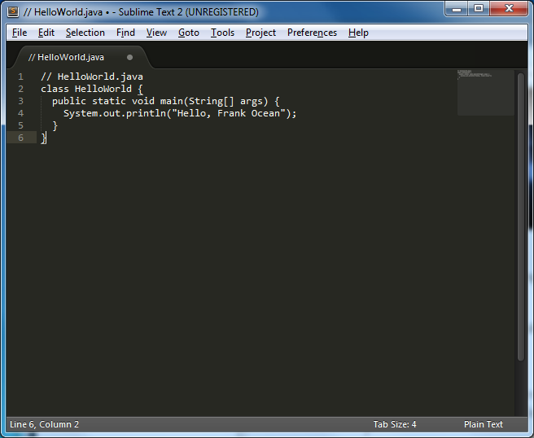
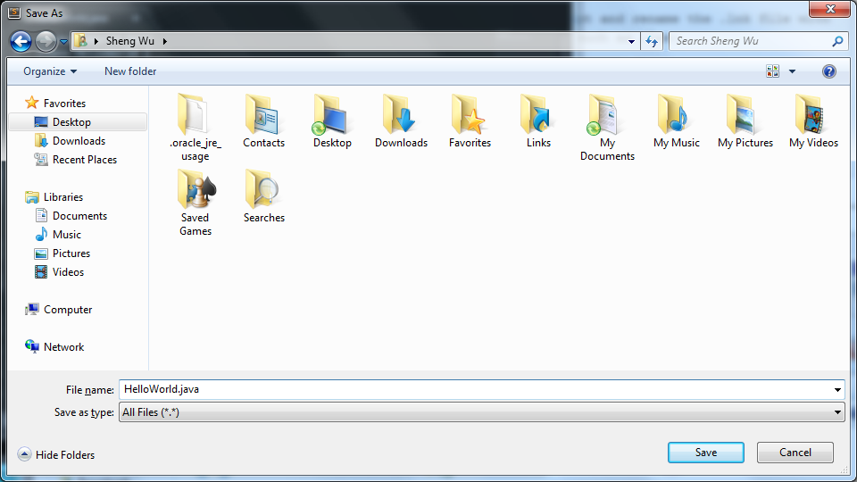
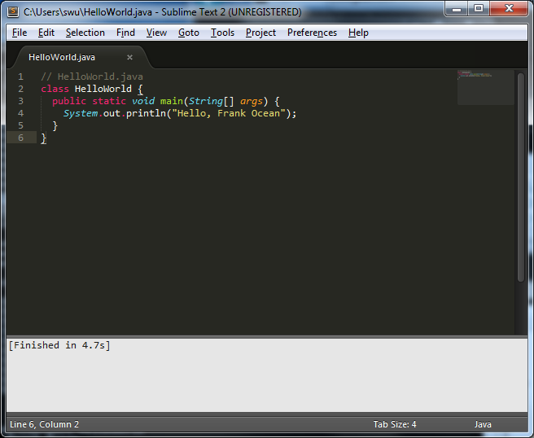
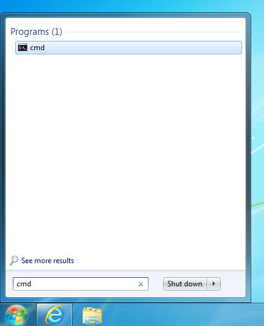
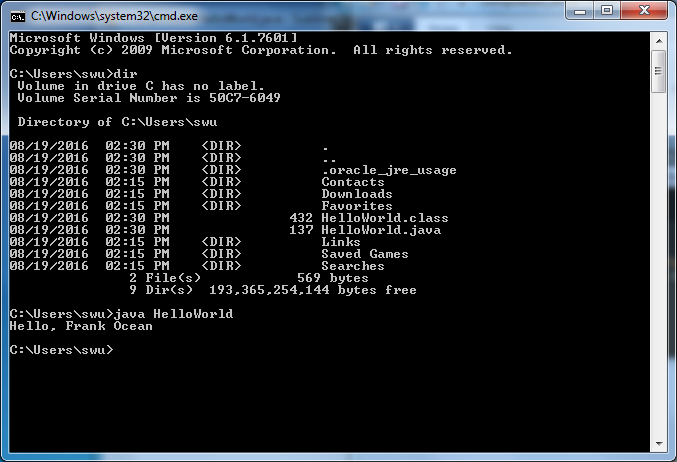
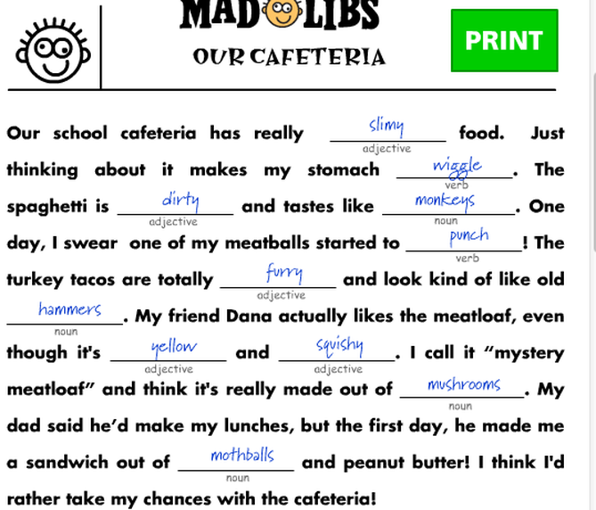

So you've made it to your first lab of CSCI 110.
First, let's get you ready to compile Java. You'll use a text editor called Sublime Text and you'll use the Windows command prompt to run your programs.
Start Sublime Text. Paste the following code into the window and save the file as HelloWorld.java. Where to save it: click Desktop on the left, then double click your name. Your save dialog should look like the screenshot below.
// HelloWorld.java
class HelloWorld {
public static void main(String[] args) {
System.out.println("Hello, NAME");
}
}

To compile the code, hit CTRL-B. Your sublime should look like this.
To run the code, open the command prompt. Hit the Windows key on your keyboard (next to Ctrl and Alt on the left). Then type "cmd" and press enter. A command prompt window should appear. This is another way to use a computer, just like pointing and clicking.
Type "dir" and press Enter and you should see a list of files in the folder, including your HelloWorld files as pictured below. dir lists all of the files in the directory.
Type "java HelloWorld" and your program should run.
Replace NAME with your name and make sure the program compiles and prints what you expect.
Add two more print statements and print things greeting the people sitting next to you too. Make sure the code compiles and runs.
Look at the code below. What do you think it does?
// BEGIN CODE
public class Weird
{
public static void main(String[] args)
{long ___;long _____[]=new long[0x10];
{_____[0]=System.nanoTime();
___=System.nanoTime()%9223372036854773232L;
for(int _______=0;_______<0x10;++_______)
{_____[_______]=(9223372036854773232L*_____[_______]+___&Long.MAX_VALUE)%9223372036854775807L;
___=9223372036854773232L*_____[_______]+___;}}
int ______=0;long _______=0;long ________=0;
for(;________<0xFFFFFFL;++________)
{long _________=(9223372036854773232L*_____[______]+___&Long.MAX_VALUE)%9223372036854775807L;
___=9223372036854773232L*_____[______]+___;
_____[______]=_________;
double __________=(double)_____[______]/Long.MAX_VALUE;
++______;
if(______>=0x10)
{______=0;}
_________=(9223372036854773232L*_____[______]+___&Long.MAX_VALUE)%9223372036854775807L;
___=9223372036854773232L*_____[______]+___;
_____[______]=_________;
double ___________=(double)_____[______]/Long.MAX_VALUE;
++______;
if(______>=0x10)
{______=0;}
if(Math.sqrt(__________*__________+___________*___________)<=1)
{++_______;}}
System.out.println(4.*_______/________);}}
// END CODE
Hit CTRL-N in Sublime to create a new tab. Paste in the code and save this file as Weird.java. Press CTRL-B in Sublime. Switch over to your command prompt and run "java Weird". Did the program do what you expect?
Mad Libs is a game where you ask people for a list of verbs, nouns, etc. The trick is that they don't know what they're going to be used for, so when you read the story back to everyone with their verbs and nouns, it's often funny.
Today, you're going to implement Mad Libs in Java. You'll:
To get you started, here's a small program that does this with two questions:
// save this as MadLibs.java
// Make the "Scanner" library available in this program
import java.util.Scanner;
public class MadLibs {
public static void main(String[] args) {
Scanner reader = new Scanner(System.in); // Reading from System.in
System.out.print("Enter a noun: ");
String noun = reader.next();
System.out.print("Enter a verb: ");
String verb = reader.next();
System.out.println(noun + " will " + verb + " before Frank Ocean releases Boys Don't Cry!");
}
}
Run the code by hitting CTRL-B in Sublime (compiling) then typing "java MadLibs" in your command prompt (running the program).
Your assignment is create a Mad Libs-style story, asking for 20+ verbs, nouns, and other parts of speech. To receive a grade for this lab, your code must run, you must ask for at least 20 things, and you must make me laugh. You can test how funny your story is by letting another student try your program before you submit it.
Email me your code at shengwu34 (at symbol) gmail.com when you're done. Don't forget to label your code with your name in a comment.